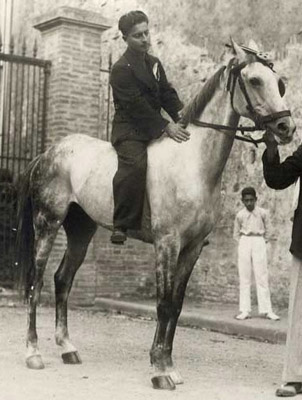
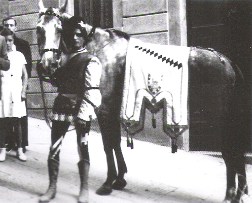
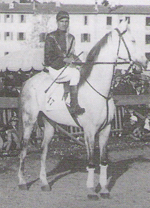

|
Gli anni trenta del secolo scorso furono, senza dubbio, densi di avvenimenti che hanno fatto la storia del Palio: vittorie lungamente attese, alleanze di ferro, fantini leggendari e traumatici tradimenti. A rendere unici quegli anni contribuirono in modo fondamentale da due immensi interpreti del Palio, due fratelli – rivali, i Bartali e Coppi della piazza, Folco e Ruello. Questi due cavalli, dalla prima vittoria di Ruello nell’agosto 1932 all’ultimo Palio prima della seconda guerra mondiale, conquistarono ben undici successi su quindici carriere a disposizione lasciando agli altri barberi solo le briciole: una vittoria a testa per Wally, Aquilino, Sansano e Giacchino. Il primo ad arrivare in piazza fu il grigio Ruello, allora di proprietà di Settimio Campanini, che debuttò nel Montone nell’agosto 1931. La vittoria arrivò ad un anno esatto dall’esordio, nel Nicchio con il giovanissimo Tripolino, fantino con il quale il grigio formò una delle accoppiate più temibili di piazza, dopo una carriera caratterizzata dalle vibranti polemiche per due mosse inspiegabilmente annullate dal Mossiere Gino Sampieri. L’anno successivo arrivò in piazza un cavallo maremmano, sauro con la stella in fronte, si chiamava Folco e toccò, tra l’indifferenza generale, alla Tartuca che lo affidò alle energiche mani di Ganascia. Nelle prime due prove Ganascia e Pasquale, storico barbaresco della Tartuca, ebbero il loro ben da fare per cercare di adattare quel vivace cavallo alla piazza, fu necessario cambiare più volte il morso a Folco che, dopo la terza prova, sembrò trasformarsi abbinando la sua potente progressione ad una crescente precisione in curva. La Tartuca vinse alla grande, Ganascia respinse con poderose nerbate gli attacchi del vecchio Meloni e Folco fece il resto. Nell’agosto seguente, per la prima volta, Folco e Ruello si trovarono l’uno contro l’altro, dando inizio ad un dualismo che resta leggendario: la sorte rimandò il sauro nella Tartuca col fido Ganascia ed il grigio finì nella Lupa con Tripolino. La corsa si risolse in un intenso duello tra i due fratelli con Folco che ebbe la meglio mettendo la firma su quello che rimarrà a lungo l’unico cappotto del secolo. Dopo tale impresa Folco, a seguito di una lunga e complessa trattativa, passò da Attilio Furi allo storico proprietario Paolo Neri che sborsò la bella cifra di 1000 £ per assicurarsi il campione maremmano; anche Ruello cambiò proprietario passando nelle mani esperte di Alfredo Pianigiani, uno dei più grandi cavallai di Siena. Il 1934 si aprì con la rivincita di Ruello che, montato dal Meloncino, conquistò la vittoria che la Civetta attendeva dal lontano 1893, mentre Folco, ancora con Ganascia, fu penalizzato da una mediocre partenza. Le tante vittorie dei due cavalli catalizzarono, ovviamente, tutte le strategie delle dirigenze tanto che anche la loro assenza nell’agosto 1934 fece molto discutere e contribuì allo scioglimento del T.O.N.O. i cui componenti, privi di precisi punti di riferimento, non riuscirono a trovare un accordo e finirono per sciogliere l’alleanza più prolifica della storia. Quella forzata assenza fece bene a Ruello che vinse i tre Palii successivi offuscando in modo perentorio la stella di Folco. Il grigio con il cappotto del 1935, con equina indifferenza, contribuì in modo determinante ad alimentare la nascente rivalità tra Lupa ed Istrice. L’anno seguente, in occasione del celebre Palio dell’Impero, la rivalità tra i due barberi si riaccese in modo entusiasmante e coinvolgente: Folco super favorito nell’Oca, desiderosa di vincere più che mai, con l’astro nascente Pietrino e Ruello nella Giraffa con il discusso e rissoso Bovino. A sorpresa Ruello trionfò per la quinta volta, l’Oca fu bloccata dalle nerbate della Chiocciola, mentre Bovino tagliava il traguardo senza nerbo, con lo zucchino calato sugli occhi, attaccato al collo del cavallo e secondo molti ubriaco fradicio. Oreste Vannini detto “Bellocchio”, celebre barbaresco giraffino, che per Ruello nutriva una vera e propria adorazione scendendo Bovino disse “…Ha vinto Ruello da solo, te ‘un hai nessuna colpa sciabordito !” Raggiunto l’apice con quella vittoria Ruello non riuscì più a ripetersi frenato da parecchi acciacchi e da qualche prova negativa di alcuni fantini, tra tutte quella di Ganascia nell’agosto 1938 che costò al Leoni la traumatica rottura con la Tartuca. Folco, a secco di vittorie dal cappotto del 1933, approfittò subito del declino di Ruello piazzando tre vittorie consecutive e riprendendosi lo scettro di “Re della Piazza” che sembrava aver definitivamente perso. Nel triennio 1937-39 Folco sbaragliò la concorrenza, potente e preciso si adattava perfettamente a qualsiasi fantino, la vittoria sfuggì solo in due occasioni nell’agosto del 1938 e del 1939 quando lo strapotere del cavallo maremmano fu chiaramente sacrificato sull’altare delle strategie paliesche. Le tragedie della guerra privarono Siena della sua Festa, la leggenda narra che nella mattina del 29 giugno 1941 Folco, accompagnato dal suo fraterno amico Pappio, fu portato nell’Entrone, come se ci fosse il Palio, tra la commozione dei tanti contradaioli presenti. In realtà negli anni della guerra il maremmano fu tenuto nascosto in campagna ed il barbaresco del Drago portò nell’entrone un cavallino della scuderia del Sor Ettore Fontani, ma tanto era bastato per riportare alla memoria Folco che da solo significava Palio, quei giorni di passione che tanto mancavano ai senesi. Finita la guerra, tra mille difficoltà, al ritorno della terra in piazza l’unico cavallo “reduce” era proprio Folco che, nonostante l’età avanzata, fu protagonista assoluto di tutte e tre le carriere del 1945: beffato da Mughetto a luglio, dominatore nella Civetta ad agosto e vincitore osteggiato in ogni modo nel celeberrimo Palio della Pace. In quello storico 20 agosto il Drago affidò Folco ad un suo coetaneo il diciannovenne Rubacuori, studente universitario e fantino alle prime armi. Quel Palio doveva vincerlo a tutti i costi il Bruco e tutto sembrava andare in quella direzione con l’Arzilli e Mughetto al centro di ogni possibile strategia vincente invece, contro tutto e contro tutti, la bistrattata coppia di diciannovenni rovinò i piani di dirigenze e fantini scatenando un putiferio che ancora oggi fa discutere. Fu quella l’ottava ed ultima perla di Folco, record di vittorie eguagliato da Panezio nel 1983. Nel luglio 1946 Folco sfiorò per l’ultima volta il successo, ormai più che ventenne corse fino al 1947 avendo saltato dall’esordio solo il Palio di luglio 1934. Passato nelle mani di Luigi Pepi trascorse gli ultimi anni alle Fornacelle dove non gli mancarono mai le visite affettuose di tanti contradaioli ed in particolare di Pappio che anche durante l’inverno si recava dall’inseparabile amico che tante soddisfazioni gli aveva dato. A chi gli domandasse il perché di quelle “trasferte” Pappio rispondeva: “Mangio, bevo e vedo Folco”. Il mitico Folco morì presso Monsindoli, dopo alcuni anni meritata pensione, idolatrato dall’intera comunità contradaiola. Per chiudere questo doppio profilo ci affidiamo alle parole tratte da un’intervista con Tripolino, fantino che con Folco e Ruello costruì gran parte delle sue fortune: “…Ruello era un cavallino preciso, affidabile, bastava mettesse il capo davanti e poi si faceva la passeggiata…poi nel 32 avevo tanti soldi da spendere e fu facile come bere un bicchiere d’acqua…anche con Folco mi trovavo bene, una bestia intelligentissima, freddo tra i canapi, non sbagliava una curva…quei due perdevano solo se i fantini facevano camorra, come Ganascia quando vinsi io nel 38 il Palio alla Chiocciola…degli altri cavalli gli stava dietro solo Berlino (nome originario di Aquilino ndr) e poi Giacchino ma quello era scorretto e ci persi nel 39 con Folco che mi fregò all’ultimo Casato…di cavalli così non ne ho visti più nemmeno quando poi ho smesso di fare il fantino…”     ALTRI CAPITOLI INERENTI A QUESTO ARGOMENTO: Proprietari dei cavalli vittoriosi I cavalli dal 1900 a oggi I cappotti dei cavalli I cavalli vincenti del Novecento I cavalli vincenti del Duemila I cavalli più fedeli I cavalli vittoriosi all'esordio Le foto dei cavalli |